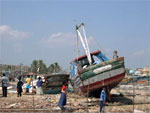

|
|
15. Kuppener Radbörse im Schneegestöber
1.000 Euro für
Schul- und Ernährungsprojekt
|
Die Initiative vom RadHaus Klaus Kastner begann vor genau 15 Jahren,
eine Radbörse mit einem sozialem Hintergrund durchzuführen.
Der Erlös der bisherigen Radbörsen kam ausnahmslos
terre des hommes zugute. Die Sparkasse Gaggenau-Kuppenheim schloss
sich dieser bewundernswerten Initiative spontan an und rundete
in
all den Jahren den Betrag großzügig auf.
Bei
der diesjährigen Radbörse wechselten von
den 233 angelieferte Fahrrädern 138 den Besitzer,
das entspricht einer Verkaufsquote von 60 Prozent. „Es
freut uns sehr, dass trotz des frühen Termins
und des unwirtlichen Wetters so viele Besucher zur
Kuppenheimer Fahrradbörse kamen“, so Bärbel
Thoma, neben Uli Thoma und Josef Luft die Organisatoren
der seit Jahren gut besuchten Aktion.
weiterlesen |
|
Radbörse-Projekt: "Landuse" (Simbabwe)
Ökologischer
Anbau hilft
Ernährung sichern
|
| Das Grundnahrungsmittel Mais wird in Simbabwe immer knapper. Mehr
und mehr Kinder sind unter- und fehlernährt. Wer Hunger
hat, der kann sich schlecht konzentrieren und lernt nicht gut.
Was liegt da näher, als Schulgärten anzulegen und dort
Gemüse anzubauen und Heilkräuter zu pflanzen? Die Gartenerträge
bieten den Schülern eine vitaminreiche Zusatzkost. Zugleich
lernen die Jungen und Mädchen etwas über ökologischen
Anbau von Nahrungsmitteln und über Landbebauung in Zeiten
der Dürre.
Vor
vier Jahren startete
terre des hommes
die Förderung des
Projektes »Landuse« in
Simbabwe. Ziel ist, das Wissen über nachhaltigen Landbau über
die Kinder und Jugendlichen in
die Erwachsenenwelt der abgelegenen
Dörfern zu transportieren.
Das Projekt entwickelt sich gut:
56 Schulen im ganzen Land beteiligen sich. Es gilt inzwischen als
erfolgreicher flächendeckender Modellversuch. Die beteiligten
Schüler müssen nicht mehr hungern und lernen zugleich Fertigkeiten
für ihr Überleben in Zeiten der Dürre. Durch die Mithilfe
im Schulgarten und den theoretischen Unterricht werden sie mit der »Permakultur« vertraut
gemacht. Der große Vorteil dieser umweltverträglichen
und den dortigen Boden- und Klimaverhältnissen angepassten Methode
ist die effiziente Nutzung des knappen und deshalb kostbaren Wassers.
Dank der Permakultur ist eine größere Vielfalt im Anbau
möglich, und die Ernteerträge sind besser, als würde
nur Mais angebaut.
Rund 3.700 Lehrer
haben sich auf
den neuen Unterrichtsstoff
vorbereitet. Etwa 50.000 Schüler
pflanzen, wässern und ernten Gemüse und Krauter. Und immer
mehr Eltern interessieren sich
für umweltverträglichen
Gemüse- und Kräuteranbau und das Trainingsprogramm. Spezielle
Gärten wurden für AIDS-Kranke angelegt, mit Erfolg - ein
terre des hommes-Projekt in Südafrika griff die Idee auf. terre des hommes
unterstützt das Projekt »Landuse« jährlich
mit rund 39.000 Euro.
Unsere Arbeitsgruppe unterstützt dieses Projekt mit den Erlösen
aus der Radbörse
am Samstag, 19.02.
in Kuppenheim.
Neben "Landuse" unterstützt terre des hommes
in Sambia und
Simbabwe Projekte
zur Ernährungssicherung,
Einkommen schaffende
Maßnahmen, AIDS-Aufklärungsprogramme,
Projekte gegen
Ausbeutung, Kindesmissbrauch
und Straßenkinder.
weitere Infos:
|
|
Zum Valentinstag am 14.Februar:
Fair gehandelte Blumen schenken
|
Zum
Valentinstag am kommenden Montag erinnert das entwicklungspolitische
Kinderhilfswerk terre des hommes daran, dass auf vielen Blumenfarmen
unmenschliche Arbeitsbedingungen herrschen. Betroffen seien insbesondere
Frauen, die in den Lieferländern in Afrika und Lateinamerika
für Hungerlöhne arbeiten und dabei oft völlig
ungeschützt giftigen Pestiziden ausgesetzt sind. terre des
hommes ruft Verbraucher in Deutschland dazu auf, Blumen aus fairem
Handel zu kaufen. Nur Blumen mit dem "Flower Label" garantierten menschenwürdige
und umweltgerechte Produktionsbedingungen. Rund 1.000 Blumengeschäfte
in Deutschland bieten Blumen mit dem "Flower Label" an.
"Gerade Kinder leiden unter den vielfach ausbeuterischen
Arbeitsbedingungen in der Blumenindustrie",
erklärte Wolf-Christian Ramm, Pressesprecher
von terre des hommes. "Denn viele der Blumenarbeiterinnen
sind allein erziehende Mütter, die nur Hungerlöhne
verdienen, von denen sie sich und ihre Kinder nicht
ernähren können." Viele Kinder müssten
deshalb arbeiten, um zum Überleben der Familien
beizutragen. Zudem gäbe es für die Blumenarbeiterinnen
keinerlei gewerkschaftliche Rechte und Mutterschutzbedingungen,
sodass Schwangere oftmals hohen Pestizidbelastungen
ausgesetzt seien.
Rund 60 Blumenfarmen in Kolumbien, Ecuador, Kenia,
Tansania, Simbabwe und Südafrika liefern Blumen
mit dem »Flower Label« nach Deutschland.
Demnächst soll in Portugal eine erste europäische
Blumenfarm "faire" Blumen anbieten. Das "Flower Label" bedeutet
die Verpflichtung, Existenz sichernde Löhne
zu zahlen, Gewerkschaftsfreiheit zu gewähren
und auf den Einsatz giftiger Pestizide zu verzichten.
Das "Flower Label Programme" wurde von terre
des hommes gemeinsam mit der Industriegewerkschaft
Bauen-Agrar-Umwelt, dem Hilfswerk Brot für die
Welt und der Menschenrechtsorganisation FIAN aufgebaut.
weitere Infos:
|
|
Heidrun Dautner malt für
terre des hommes - Ausstellung bis Ende Februar
|
Seit mehreren Jahren
bereits stellt die Rastatter Künstlerin Heidrun
Dautner terre des hommes Bilder zur Verfügung. Beim
Kunstmarkt/Basar in Kuppenheim ist sie jedes Jahr vertreten
und trägt einen wesentlichen Teil zur Attraktivität
der Benefiz-Veranstaltung bei. All ihre bisher gespendeten
Bilder fanden einen Abnehmer. Mit dem Verkaufspreis konnten
stets Projekte von terre des hommes unterstützt
werden.
Zur Zeit stellt Heidrun Dautner im Schloss Rotenfels
aus. Die beiden ersten verkauften Bilder hat sie
mittlerweile terre des hommes gespendet. Sollte auch
ein drittes Bild einen Käufer finden, dann wird
die großzügige Künstlerin den Erlös
daraus der Kinderhilfsorganisation überlassen.
Die Ausstellung ist noch bis Ende Februar geöffnet.
Vita
1958 in Orzydorf in Banat/Rumänien geboren
1977-1980
Studium der freien Grafik, Temeschburg
1980
Umzug nach Rastatt
Seit
1986 intensive Beschäftigung mit
der Malerei, als Spielfeld experimentierfreudiger
Neugierde
1997
Illustration mehrerer Kinderbücher
und deren Veröffentlichung im ideeinform-Verlag
Eigenes
Atelier in Rastatt seit 1987
Ausstellungen
| 1985-1987 |
verschiedene
kalligraphische
Gruppenausstellungen |
| 1994 |
„Impressionen" erste
Einzelausstellung
- Galerie
der Stadtbibliothek
Gaggenau |
| 1998 |
„Gesten" -
Malerei
und Zeichnung,
Kunsthof
Bonn |
| 2000 |
„Kunst
bewegt",
Gaggenauer
Kunsttage |
| 2001-2002 |
verschiedene
Gemeinschaftsausstellungen
des
Vereins
der
Freunde
junger
Kunst,
Baden-Baden:
- „Freie
Wahlen" Staatliche
Kunsthalle,
Baden-Baden
- „Handicap
Kunst" Altes
Dampfbad,
Baden-Baden
|
| 2001 |
Kunstpreis „Residenz
Bären",
Baden-Baden |
| 2003 |
„Realitäten" Galerie
Altes
Rathaus,
Inzlingen
„im rausch der farben" Pagodenburg, Rastatt
„faites votre jeu" Altes Dampfbad, Baden-Baden |
| 2004 |
„see
you" -
Caras-Installation
Maisch-Optik,
Gaggenau
„alles fließt" - Freilandinstallation am Murgufer ROTARY-Benefiz-Kunstauktion,
Kongresshaus Baden-Baden |
|
|
Aktion: »Faire Entschuldung
für alle Länder, Herr Eichel!«
|
erlassjahr.de ruft dazu auf, e-Postcards unter dem Motto »Faire
Entschuldung für alle Länder, Herr Eichel!« an
den Bundesfinanzminister zu senden.
Im Aufruf heisst es: Auf die schreckliche Flutkatastrophe
in Asien hat die Bundesregierung unter anderem mit
einer Initiative für ein Schuldenmoratorium
reagiert. Nach Berechnungen der UNO sterben weltweit
in jeder Woche etwa so viele Menschen an Mangelernährung
und vermeidbaren Krankheiten, wie nun Opfer der Katastrophe
geworden sind. Um dieser von Menschen gemachten Katastrophe
entgegenzutreten reichen kleinere Erleichterungen
im Pariser Club, wie sie jetzt vorgeschlagen wurden,
nicht aus.
erlassjahr.de fordert daher die Bundesregierung auf,
beim G8-Finanzministertreffen im Februar 2005 die
Verpflichtung aus dem Koalitionsvertrag auf ein umfassendes
Insolvenzverfahren für alle kritisch verschuldeten
Länder endlich umzusetzen.
Mitmachen:
http://www.erlassjahr.de/content/mitmachen/aktionen_epostcard.php
|
|
Kinder als Ware auf dem Weltmarkt
?
|
Verbessert
die Globalisierung die Situation der Kinder weltweit, oder führt
sie zu einer verstärkten Ausbeutung von Kindern? Diese Frage
steht im Mittelpunkt einer Reihe von Diskussionsveranstaltungen,
die die Internationale Föderation terre des hommes auf dem
Weltsozialforum in Porto Alegre organisieren wird.
In vielen Ländern der Dritten Welt stellen Kinder
unter 18 Jahren fast die Hälfte der Bevölkerung.
Der weltweite Wettbewerb um die Herstellung von Waren
zu niedrigsten Preisen führt Millionen Kinder
in ausbeuterische Arbeitsverhältnisse, von denen
sie und ihre Familien nicht überleben können.
Millionen Kinder verdingen sich als Hausangestellte,
Prostituierte oder Bettler. Die Konkurrenz um immer
billigere Waren macht die Arbeitskraft der Kinder
und damit sie selbst zu einer Ware auf dem globalen
Markt.
Die
Internationale Föderation terre des hommes appelliert
an Regierungen und weltweit tätige Unternehmen,
dieser Ausbeutung von Kindern entgegen zu treten. »Wir
werden das Thema auf die Tagesordnung des Weltsozialforums
bringen«, so Raffaele Salinari, Präsident
der Internationalen Föderation terre des hommes
in Porto Alegre. »Wir setzen uns für die
Rechte von Kindern und dafür ein, dass nicht
auch Kinder als Waren und billiger Rohstoff des Weltmarktes
missbraucht werden. Kinder müssen überall
auf der Welt die Chance auf eine Ausbildung und damit
auf gesellschaftliche Teilhabe erhalten.«
Die Internationale Föderation terre des hommes
wird beim Weltsozialforum gemeinsam mit Partnerorganisationen
Positionen und Strategien gegen ausbeuterische Kinderarbeit,
Kinderhandel und die Verweigerung sozialer und kultureller
Rechte erörtern.
weitere Infos:
|
|
Das Thema Kindersoldaten im Unterricht:
Aufruf
zur Aktion Rote Hand
|
Rund
300.000 Kinder und Jugendliche werden weltweit als Kindersoldaten
missbraucht. Am 12. Februar, dem Red Hand Day" zeigen Jugendliche
und Erwachsene als Protest gegen den Einsatz von Kindern in Kriegen
die Rote Hand. Wir rufen Sie auf, sich mit Ihren Schülerinnen
und Schülern an der "Aktion Rote Hand 2005" zu
beteiligen!
Aktion Rote Hand
Im Unterricht informieren sich die Jugendlichen über
die Situation von Kindersoldaten. Wir
bieten Ihnen dazu eine Lehrerinformation,
Materialien und Referentinnen und Referenten.
Aktion: Senden Sie Digitalfotos Ihrer
Klasse mit roten Händen an uns -
wir veröffentlichen sie auf unserer
Webseite und zeigen sie am 12. Februar.
Kunst gegen Krieg
Beteiligen Sie sich an der Kunstaktion
zugunsten von Kindern in Kriegen und
Krisengebieten. Ihre Schülerinnen
und Schüler schaffen Kunstwerke,
mit denen sie ihre Emotionen zu Gewalt
und Krieg ausdrücken. Die Kunstgegenstände
werden regional und in einer Gesamtschau
gezeigt und von Prominenten versteigert.
Der Erlös geht an ein Projekt unserer
Partnerorganisationen, das sich Ihre
Klasse auf unserer Webseite aussucht.
Ein Teil der Kunstwerke wird für
eine Wanderausstellung ausgewählt,
die ab Juni 2005 gebucht werden kann.
Red Hand Day - 12.
Februar 2005
Die zentrale Veranstaltung in Köln
wird gemeinsam mit Jugendlichen vorbereitet.
Sie erklären in kleinen Dialogen
die
Situation
von Kindern in Kriegen. Senait Mehari,
selbst als Kind in eine Armee gezwungen,
spricht und singt von ihren Erfahrungen.
Die Digitalfotos und erste Kunstwerke
werden ausgestellt.
terre des hommes organisiert die Aktionen
gemeinsam mit der »Aktion Weißes
Friedensband«.
alle Infos unter: www.friedensband.de/kindersoldaten |
|
Thailand: Hilfe und Wiederaufbaumaßnahmen
für traditionelle Fischergemeinden
|
Für
den Wiederaufbau in der Region ANDAMAN, Thailand, stellt terre
des hommes 300.000 Euro zur Verfügung.
Angesichts der Folgen des zerstörerischen
Tsunamis, der am 26. Dezember 2004 die
Westküste Thailands traf, bildete
sich am 28. Dezember 2004 das »Collaborative
Network for the Rehabilitation of the
Andaman Community and Natural Resources«.
Träger dieses Netzwerkes sind 35 NGOs (Nichtregierungsorganisationen),
die in der Region bereits tätig sind und nun
für benachteiligte Bevölkerungsgruppen – vor
allem traditionelle Fischergemeinschaften – sowohl
Soforthilfemaßnahmen als auch langfristige
Rehabilitationsprogramme durchführen.
In der Region sind 186 Fischerdörfer in sechs
Provinzen entlang der sogenannten Andamanenküste
betroffen. 669 der traditionellen Fischer wurden
getötet, weitere 26 sind noch immer vermisst.
Ihre Lebensgrundlage, Häuser, Boote, Netze,
Reusen und andere Gerätschaften, sind zerstört.
Bis Mitte Januar hatten die Nothilfemaßnahmen
der Regierung diese Menschen noch nicht erreicht.
Da noch nicht in allen betroffenen Gemeinden die
Schäden festgestellt werden konnten, kümmert
sich das Netzwerk zunächst um 2.000 betroffene
Familien und will folgende Schwerpunkte umsetzen:
Nothilfe und langfristige Rehabilitation für
die betroffenen Familien.
Bis
März sollen alle Ausrüstungsgegenstände
der betroffenen 2.000 Familien sowie
insgesamt 600 Boote repariert bzw. wiederbeschafft
sein, damit die Menschen ihren Lebensunterhalt
wieder eigenständig erwirtschaften
können. Insgesamt sollen vier alternative
Schulen für betroffene Kinder aufgebaut,
sowie sog. Lern-Aktivitäten angeboten
werden, die auch der psycho-sozialen
Betreuung zur Traumabewältigung
dienen.
Die betroffene Bevölkerung soll in die Hilfsmaßnahmen
und Aufbau von Selbsthilfekapazitäten und –strukturen
einbezogen werden. Ziel ist der gemeinschaftliche
Wiederaufbau der Dörfer und die Durchführung
von Umweltmaßnahmen zur Wiederherstellung der
Lebensräume.
Informationen und Daten, über Verluste und Schäden
sollen gesammelt und zugänglich gemacht werden.
Dies soll auch als Grundlage für die Erstellung
sogenannter Community Development Plans (Gemeindeentwicklungspläne)
dienen.
Kritische Unterstützung und Begleitung der staatlichen
Hilfsmaßnahmen, z. B. Sicherung gerechter Verteilung
von Hilfsgütern, Verhinderung der Benachteiligung
einzelner Bevölkerungsgruppen, Überwachung
und Dokumentation der Maßnahmen.
|
|
»Diese Solidarität
hat mich am meisten beeindruckt«
Interview
mit Walter Skrobanek, terre des hommes-Koordinator
Südostasien
|
Wie
groß sind die Schäden durch den Tsunami in Südostasien?
Die Schäden sind unermesslich. Regierungen
haben versucht, sie in Zahlen zu fassen,
was das Vorstellungsvermögen der
meisten Menschen übersteigt und
nur die materiellen Verluste widerspiegeln
kann. Wer kann die psycho-traumatischen
Schäden berechnen, mit denen fast
alle Überlebenden jetzt umgehen
müssen?
Nur die Zahl der Todesopfer ist der Maßstab
für das Ausmaß der Katastrophe. Am schwersten
wurde die Provinz Aceh im Norden der indonesischen
Insel Sumatra vom Tsunami getroffen. Die Zahl der
Toten in Aceh wird inzwischen auf 200.000 geschätzt,
die Zahl der internen Flüchtlinge auf 600.000
Menschen. Das zweitschwerst betroffene Gebiet in
Südostasien sind sechs Provinzen in Süd-Thailand,
wo mehr als 5.300 Tote identifiziert wurden. Darin
ist die hohe Zahl von Vermissten noch nicht eingeschlossen.
weiterlesen
auf tdh.de
|
|
"Brezel-Böhmer" und "brezels" spenden
für terre des hommes – für Projekte
gegen Kinderhandel
|
|
|
| Peter
Böhmer übergibt
den 10. Scheck an terre
des hommes Murgtal
/ Mittelbaden |
Seit mittlerweile
10 Jahren unterstützt Brezel-Böhmer die Kinderhilfsorganisation
terre des hommes Murgtal / Mittelbaden. Und so kamen
Peter Böhmer (Brezel-Böhmer Kuppenheim) und
Michael Böhmer (brezel’s Gaggenau) abermals
zu dem Entschluss, anstatt eines kleinen Weihnachtsgeschenks
an die vielen Kunden ein Projekt von terre des hommes
mit 750 Euro zu unterstützen.
Durch den Verzicht auf Präsente und durch Sachspenden
der Bäckerei konnten die Geschäftsleute
aus dem vorderen Murgtal bisher eine Summe von annähernd
12.000 Euro für Projektpartner von terre des
hommes zur Verfügung stellen.
„Brezel-Böhmer war der erste Sponsor aus
dem gewerblich/industriellen Bereich. Mittlerweile
sind es rund 150 geworden, die regelmäßig
die regionale Hilfsorganisation unterstützen“,
so Heinz Wolf, der das Sponsoring für terre
des hommes aufgebaut hat.
Grenzenlos ausgebeutet: Kinder sind zu einer begehrten
Ware für den internationalen Markt geworden.
Sie sind Opfer skrupelloser Menschen, die vor allem
eins wollen: Profit. Denn mit Kindern lässt
sich viel Geld verdienen. Ob als Prostituierte, Plantagenarbeiter,
Dienstmädchen oder Bettler. Sie bezahlen dafür
mit ihrer Gesundheit und häufig mit ihrem Leben.
Im Rahmen der internationalen Kampagne gegen Kinderhandel
klärt terre des hommes auf, greift gegen Händler
ein, beugt vor und hilft schließlich den Opfern,
mehr als 10.000 in den vergangenen Jahren. Dabei
arbeitet terre des hommes eng und erfolgreich mit
einheimischen Partnern zusammen.
weitere Infos: Stoppt
Kinderhandel – Die internationale Kampagne
|
|
|
|
 Ansprechpartner Ansprechpartner
|
|
Wolfgang Deppisch
(Projektinfos)
Tel. 07222 / 32927
Heinz Wolf
(Sponsoring, Allgemeines)
Tel. 07225 / 75543
weitere Ansprechpartner
|
|
Erlöse
1992-2012
|
|

Jahr |
Euro |
1992 |
70.000 |
1993 |
75.600 |
1994 |
83.883 |
1995 |
69.617 |
1996 |
51.412 |
1997 |
61.749 |
1998 |
60.333 |
1999 |
68.742 |
2000 |
85.492 |
2001 |
106.375 |
2002 |
78.937 |
2003 |
84.027 |
2004 |
76.662 |
2005 |
149.941 |
2006 |
84.497 |
2007 |
105.958 |
2008 |
104.053 |
2009 |
100.833 |
2010 |
107.254 |
2011 |
103.600 |
| 2012 |
158.250 |
| 2013 |
163.420 |
1977-2013 |
mehr als 2,7 Mio. € |
|
Detailansicht der Erlöszahlen |
|
|


;)
;)
;)
;)
;)
;)
;)
;)
;)